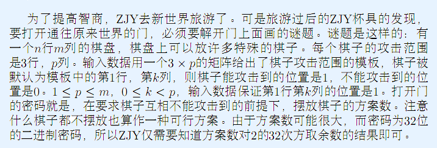

BZPRO
#4000. [TJOI2015]棋盘
内存限制：128 MiB
时间限制：10 Sec
提交
提交记录
讨论
题目描述

输入格式
输入数据的第一行为两个整数N，M表示棋盘大小。第二行为两个整数P，K，
表示攻击范围模板的大小，以及棋子在模板中的位置。接下来三行，
每行P个数，表示攻击范围的模版。每个数字后面一个空格。
输出格式
一个整数，表示可行方案Mod 2 ^32
样例
样例输入
2 2
3 1
0 1 0
1 1 1
0 1 0
样例输出
7
数据范围与提示
1<=N<=10^6,1<=M<=6